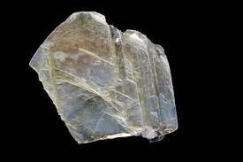

Non-Metallic Minerals
==>Mica is a mineral made up of a series of plates
or leaves. These
sheets can be so thin that a thousand can be
layered into a mica sheet of a few centimeters
high.
==>Mica can be clear, black, green, red yellow
or brown. Due to its excellent di-electric
strength, mica
is one of the most indispensable minerals used
in electric and electronic industries.
==>Mica deposits are found in the northern
edge of the Chota Nagpur plateau. Koderma
Gaya – Hazaribagh belt of Jharkhand is the
leading producer.
==>In Rajasthan, the major mica producing
area is around Ajmer. Nellore mica belt of
Andhra Pradesh is also an important producer
in the country.
